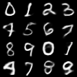
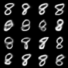
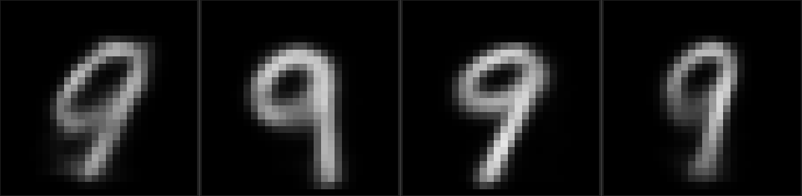
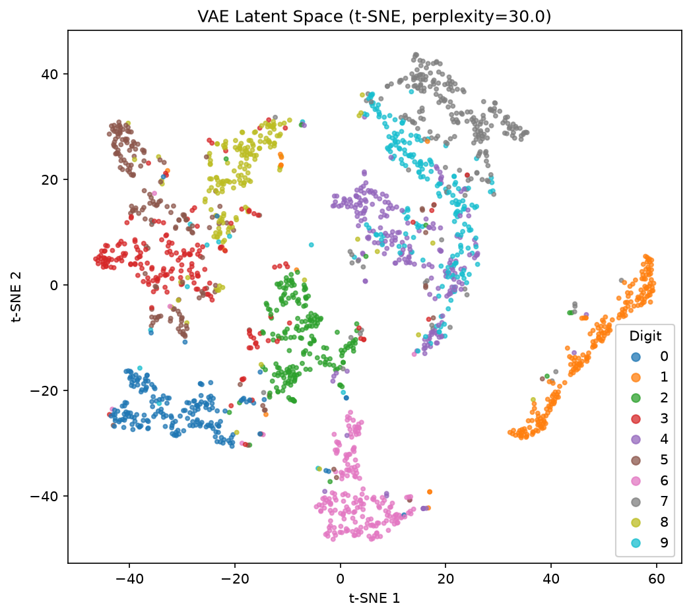
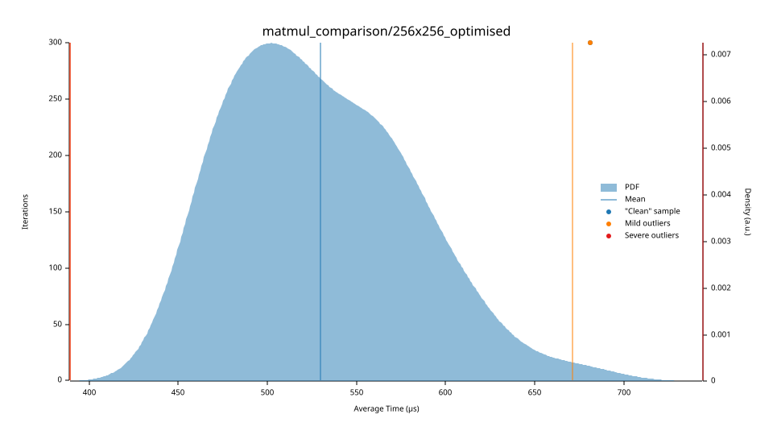
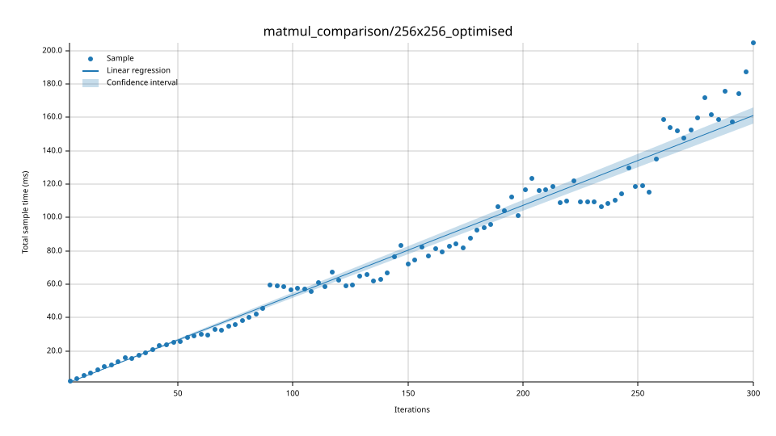

// neural networks from first principles
mentats
A neural network library written from scratch in Rust. Tensors, GEMM-based convolutions, autoencoders and class-conditioned generative models, with one external dependency.

z ~ N(0, I)01 What is mentats
From scratch
Every operation (matmul, convolution, pooling, upsampling, backprop, Adam) is written by hand on flat
Vec<f32> tensors. No BLAS, no autograd framework. rand is used only for weight init.
Fast
Cache-friendly i-k-j matmul with auto-vectorised fast paths, im2col/col2im
convolutions, 4D mini-batches, and fat-LTO release builds.
Generative
Classifiers, VAEs and conditional VAEs with free-bits KL and β-annealing, all assembled with a fluent
Network::builder() API.
let mut encoder = Network::builder()
.reshape(vec![1, 28, 28])
.conv2d_kaiming(1, 16, (3, 3))
.relu()
.max_pool2d()
.conv2d_kaiming(16, 32, (3, 3))
.relu()
.max_pool2d()
.flatten()
.build();02 Gallery



03 Model results
// Classification Models (MNIST)
Cross-entropy loss
Train accuracy (%)
04 Kernel benchmarks
2D matmul throughput (GFLOP/s)
Batched matmul throughput (GFLOP/s)
Layer kernels (ms, median)
View Criterion statistical distribution & violin plots
MatMul comparison: violin distribution
Optimised MatMul: probability density (PDF)

Optimised MatMul: iteration vs time regression

Conv2D batched: violin distribution
05 Optimisation history
Speedup relative to the first measured version, re-measured by running today's benchmarks against each commit.
06 mentats vs PyTorch
Share of PyTorch single-thread speed (%)
07 Codebase
08 Getting started
# add to your project
cargo add mentats
# or clone and run the flagship example
git clone https://github.com/Sleishm4n/mentats
cd mentats
cargo run --example batched_cnn_cvae --release
cargo run --example batched_cnn_cvae --release -- generate 7 16MNIST files go in data/mnist/. See the
README for details.